|
HEART A heart transplant, or a cardiac transplant, is a surgical transplant procedure performed on patients with end-stage heart failure or severe coronary artery disease when other medical or surgical treatments have failed. As of 2018, the most common procedure is to take a functioning heart, with or without transplanting one or both lungs at the same time, from a recently deceased organ donor (brain death is the standard) and implanting it into the patient. The patient's own heart is either removed and replaced with the donor heart (orthotopic procedure) or, much less commonly, the recipient's diseased heart is left in place to support the donor heart (heterotopic, or "piggyback", transplant procedure).Approximately 3,500 heart transplants are performed every year in the world, more than half of which occur in the US.Post-operation survival periods average 15 years.Heart transplantation is not considered to be a cure for heart disease but a life-saving treatment intended to improve the quality of life for recipients. | ||

|
HAND Hand transplantation is a surgical procedure to transplant a hand from one human to another. The "donor" hand usually comes from a brain-dead donor and is transplanted to a recipient who has lost one or both hands/arms. Most hand transplants to date have been performed on below elbow amputees, although above elbow transplants are gaining popularity. Hand transplants were the first of a new category of transplants where multiple organs are transplanted as a single functional unit, now termed "Vascularized Composite Allotransplantation" or VCA.The operation is quite extensive and typically lasts from 8 to 12 hours. By comparison, a typical heart transplant operation lasts 6 to 8 hours. Surgeons usually connect the bones first, followed by tendons, arteries, nerves, veins, and skin. The recipient of a hand transplant needs to take immunosuppressive drugs similar to other transplants such as kidneys or livers, as the body's natural immune system will try to reject, or destroy, the hand. These drugs cause the recipient to have a weaker immune system which may lead to an increased risk of infections and some cancers. There have been many advances in solid organ transplantation over the years that have made these medications quite tolerable. After the transplant, there is a period of extensive hand therapy/rehabilitation which helps the recipients regain function of the transplanted hand. Those patients who are dedicated to taking the medications and performing the physical therapy following a hand transplant have had remarkable success in regaining function of the new hands/arms. | |
| |
BONE Bone grafting is a surgical procedure that replaces missing bone in order to repair bone fractures that are extremely complex, pose a significant health risk to the patient, or fail to heal properly. Some kind of small or acute fractures can be cured but the risk is greater for large fractures like compound fractures.Bone generally has the ability to regenerate completely but requires a very small fracture space or some sort of scaffold to do so. Bone grafts may be autologous (bone harvested from the patient’s own body, often from the iliac crest), allograft (cadaveric bone usually obtained from a bone bank), or synthetic (often made of hydroxyapatite or other naturally occurring and biocompatible substances) with similar mechanical properties to bone. Most bone grafts are expected to be reabsorbed and replaced as the natural bone heals over a few months’ time. The principles involved in successful bone grafts include osteoconduction (guiding the reparative growth of the natural bone), osteoinduction (encouraging undifferentiated cells to become active osteoblasts), and osteogenesis (living bone cells in the graft material contribute to bone remodeling). Osteogenesis only occurs with autograft tissue and allograft cellular bone matrices. | |
|
FACE A face transplant is a medical procedure to replace all or part of a person's face using tissue from a donor. The world's first partial face transplant on a living human was carried out in France in 2005. The world's first full face transplant was completed in Spain in 2010.Turkey,France, the United States and Spain (in order of total number of successful face transplants performed) are considered the leading countries in the research into the procedure. | ||

|
BONE-MARROW Bone Marrow Transplantation is a peer-reviewed medical journal covering transplantation of bone marrow in humans. It is published monthly by Nature Research. The scope of the journal includes stem cell biology, transplantation immunology, translational research, and clinical results of specific transplant protocols. | |
| |
KIDNEY Kidney transplantation or renal transplantation is the organ transplant of a kidney into a patient with end-stage renal disease. Kidney transplantation is typically classified as deceased-donor (formerly known as cadaveric) or living-donor transplantation depending on the source of the donor organ.Living-donor renal transplants are further characterized as genetically related (living-related) or non-related (living-unrelated) transplants, depending on whether a biological relationship exists between the donor and recipient. Exchanges and chains are a novel approach to expand the living donor pool. In February 2012, this novel approach to expand the living donor pool resulted in the largest chain in the world, involving 60 participants organized by the National Kidney Registry.In 2014 the record for the largest chain was broken again by a swap involving 70 participants. | |

|
INTESTINE Intestine transplantation, intestinal transplantation, or small bowel transplantation is the surgical replacement of the small intestine for chronic and acute cases of intestinal failure. While intestinal failure can oftentimes be treated with alternative therapies such as parenteral nutrition (PN), complications such as PN-associated liver disease and short bowel syndrome may make transplantation the only viable option. The rarest type of organ transplantation performed, intestine transplantation is becoming increasingly prevalent as a therapeutic option due to improvements in immunosuppressive regiments, surgical technique, PN, and the clinical management of pre and post-transplant patients. | |
| |
CORNEA Corneal transplantation, also known as corneal grafting, is a surgical procedure where a damaged or diseased cornea is replaced by donated corneal tissue (the graft). When the entire cornea is replaced it is known as penetrating keratoplasty and when only part of the cornea is replaced it is known as lamellar keratoplasty. Keratoplasty simply means surgery to the cornea. The graft is taken from a recently dead individual with no known diseases or other factors that may affect the chance of survival of the donated tissue or the health of the recipient.The cornea is the transparent front part of the eye that covers the iris, pupil and anterior chamber. The surgical procedure is performed by ophthalmologists, physicians who specialize in eyes, and is often done on an outpatient basis. Donors can be of any age, as is shown in the case of Janis Babson, who donated her eyes at age 10. The corneal transplantation is performed when medicines, keratoconus conservative surgery and cross-linking cannot heal the cornea anymore. | |
| 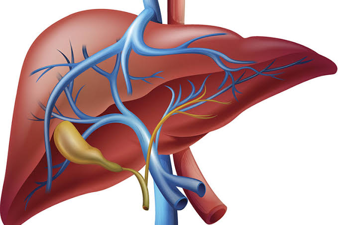 |
LIVER Liver transplantation or hepatic transplantation is the replacement of a diseased liver with the healthy liver from another person (allograft). Liver transplantation is a treatment option for end-stage liver disease and acute liver failure, although availability of donor organs is a major limitation. The most common technique is orthotopic transplantation, in which the native liver is removed and replaced by the donor organ in the same anatomic position as the original liver. The surgical procedure is complex, requiring careful harvest of the donor organ and meticulous implantation into the recipient. Liver transplantation is highly regulated, and only performed at designated transplant medical centers by highly trained transplant physicians and supporting medical team. The duration of the surgery ranges from 4 to 18 hours depending on outcome.[medical citation needed] Favorable outcomes require careful screening for eligible recipient, as well as a well-calibrated live or cadaveric donor match. | |
| |
SKIN Skin grafting is a type of graft surgery involving the transplantation of skin. The transplanted tissue is called a skin graft.Skin grafting is often used to treat: Extensive wounding or trauma Burns Areas of extensive skin loss due to infection such as necrotizing fasciitis or purpura fulminans. Specific surgeries that may require skin grafts for healing to occur - most commonly removal of skin cancers Skin grafts are often employed after serious injuries when some of the body's skin is damaged. Surgical removal (excision or debridement) of the damaged skin is followed by skin grafting. The grafting serves two purposes: reduce the course of treatment needed (and time in the hospital), and improve the function and appearance of the area of the body which receives the skin graft. There are two types of skin grafts, the more common type is where a thin layer is removed from a healthy part of the body (the donor section) like peeling a potato, or a full thickness skin graft, which involves pinching and cutting skin away from the donor section. A full thickness skin graft is more risky, in terms of the body accepting the skin, yet it leaves only a scar line on the donor section, similar to a Cesarean section scar. For full thickness skin grafts, the donor section will often heal much more quickly than the injury and is less painful than a partial thickness skin graft. | |
| |
PANCREAS A pancreas transplant is an organ transplant that involves implanting a healthy pancreas (one that can produce insulin) into a person who usually has diabetes. Because the pancreas is a vital organ, performing functions necessary in the digestion process, the recipient's native pancreas is left in place, and the donated pancreas is attached in a different location. In the event of rejection of the new pancreas, which would quickly cause life-threatening diabetes, there would be a significant chance the recipient would not survive very well for long without the native pancreas, however dysfunctional, still in place. The healthy pancreas comes from a donor who has just died or it may be a partial pancreas from a living donor.At present, pancreas transplants are usually performed in persons with insulin-dependent diabetes, who can develop severe complications. Patients with the most common, and deadliest, form of pancreatic cancer (pancreatic adenomas, which are usually malignant, with a poor prognosis and high risk for metastasis, as opposed to more treatable pancreatic neuroendocrine tumors or pancreatic insulinomas) are usually not eligible for valuable pancreatic transplantations, since the condition usually has a very high mortality rate and the disease, which is usually highly malignant and detected too late to treat, could and probably would soon return. Better surgical method can be chosen to minimize the surgical complications with enteric or bladder drainage. Advancement in immunosuppression has improved quality of life after transplantation. | |
| |
TENDON A tendon transfer is a surgical process in which the insertion of a tendon is moved, but the origin remains in the same location. Tendon transfer involves redistribution of muscle power, not recreation. Tendons are transferred at the distal attachment from lesser to more important functions so that the overall function is improved. Tendon transfers provide a substitute which can be permanent or temporary, when muscle function is lost either due to nerve injuries or injuries to the muscle/tendon unit. Tendon transfers are also performed to correct the imbalanced muscle tone due to spasticity resulting from injuries to the central nervous system. |
| 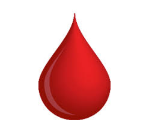 | DONATE ORGAN |
Help Other To Help Yourself...... |
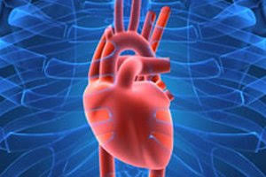
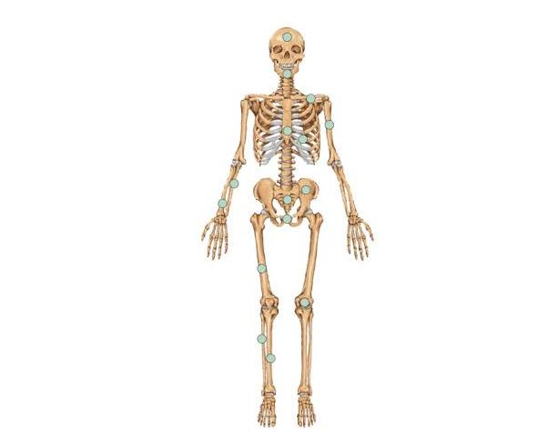

 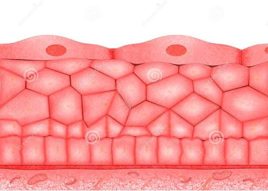
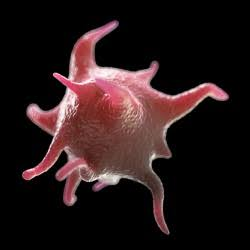
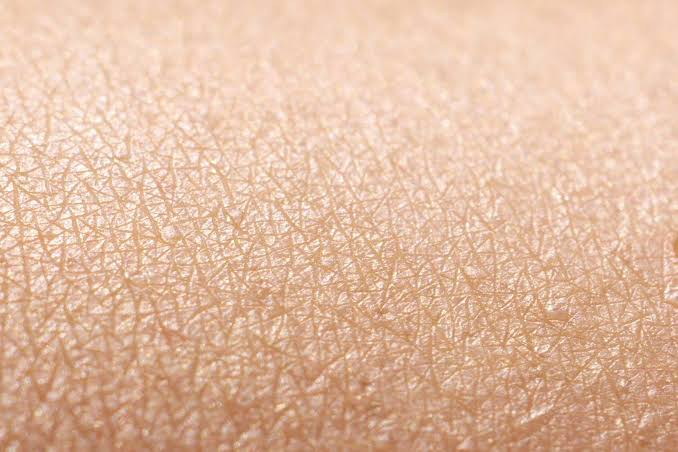
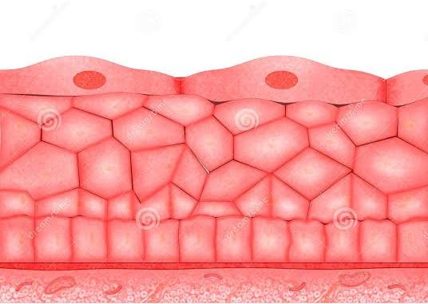
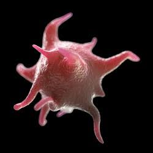
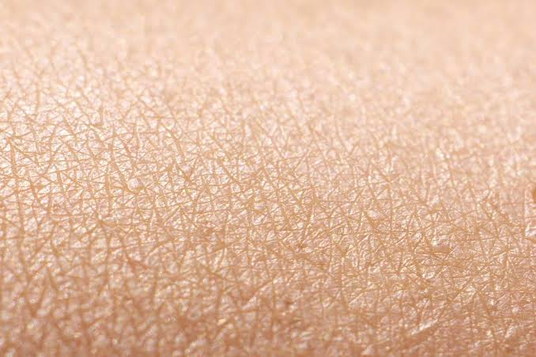


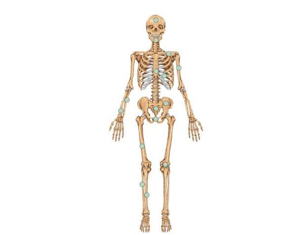
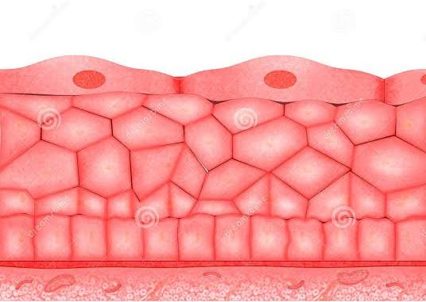
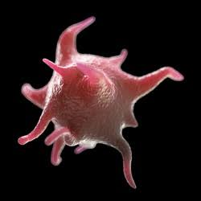
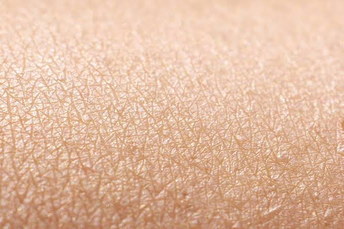